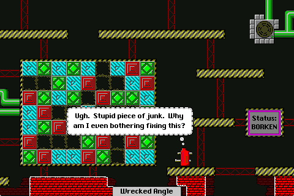
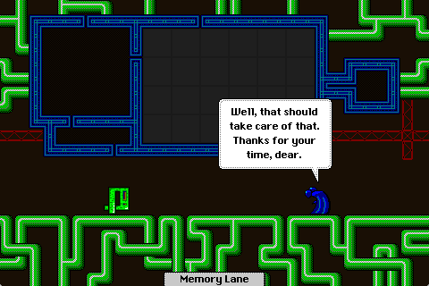

A motley crew (of autonomous programs), a peaceful (if perhaps mysterious) mission, and no enemy vessels for lightyears around—what could possibly go wrong? Just about everything, as it turns out. And after a strange midflight disaster knocks out most of the ship's subsystems (sabotage, perhaps?), you'll have to guide Mezure—the plucky new administrator process—and the rest of the crew to repair the damage. But beware—not all is as it seems aboard the H.L.S. System.
System Syzygy is a story and a puzzle game, in the style of Cliff Johnson's classic Macintosh games The Fool's Errand and 3 in Three, and of Andrew Plotkin's System's Twilight. As you move through the game, solving a variety of different kinds of puzzles, the game tells the story a piece at a time. By the end of the game, all the different puzzles and pieces of the story come together into a single meta-puzzle.
System Syzygy is nearing completion, and will be released in Summer 2018.